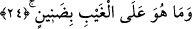

24. O, gaybın bilgilerini (sizden) esirgemez.
“O” Rasûlullah “gaybın bilgilerini (sizden) esirgemez.” Yani gaybtan haber verdiği
vahyi ve kendisine iletilen başka şeyleri esirgeyecek kadar cimri değildir. Bir başka
ifâdeyle; o vahyi esirgeyip de bir kısmını kendine saklayıp insanlara tebliğ etmeyen ve
gizleyen bir kimse değildir. O yanındaki bilgileri karşılığında ücret almak için veya
öğretme karşılığında ücret taleb etmek için gizleyen kahin gibi değildir.
Âyette ilmi ehline vermeyip tutmanın cimrilik demek olduğuna işâret vardır. Cimri
anlamında âyet metninde “danîn” kelimesi geçiyor. Bu kelime “danne” kökünden olup
anlamı “cimrilik etti” demektir.
“Danîn” şeklindeki kırâat, imamlardan Nâfi, Asım, Hamza ve İbn Âmir’in
kırâatlarıdır. en-Neşr isimli kitapta kelimenin halkın elinde kullandıkları musafların
tümünde “danîn” şeklinde geçtiği ifâde olunmaktadır. Bu kelime Abdullah b. Mes’ud’un
mushafında “zı” harfiyle “zanîn” şeklinde yer almaktadır. “Zanîn”in anlamı ise; “zan
altında, töhmetli, zanlı” demektir. Ebû Ubeyde bu kelimenin “zanîn” şeklindeki kırâatini
tercih etmiştir. Onun bakış açısına göre kâfirler Peygamber Efendimiz’i cimrilikle
suçlamıyorlardı. Onlar aslında özellikle Peygamberimiz (s.a.)’i suçluyorlardı.
Dolayısıyla âyette Peygamberimiz (s.a.)’in “cimri olmadığı”nın değil “zanlı
olmadığı”nın vurgulanması daha uygun düşer. Sonra mânânın böyle olduğunu
kelimelerin kullanılışı da desteklemektedir. Çünkü cimrilik anlamına gelen “buhl” kökü
“ba” harfi cerri ile kullanılır. Oysa âyette “ala” harfi cerriyle kullanılmıştır.
Keşşaf’ta deniyor ki: “Danîn” kelimesi İbn Mes’ud’un mushafında “zı” harfiyle,
“zanîn” şeklinde yer almaktadır. Übeyy’in mushafında ise “dat” harfiyle “danîn”
şeklindedir. Keşşaf’ın ifâdesine göre Peygamber Efendimiz, bu kelimeyi her iki şekilde
de okuyordu.
Kur’an’ı kırâat eden kimsenin dat ile zı harflerinin mahreçlerini bilmesi şarttır. Dat
harfi dilin yan tarafının sağdan veya soldan üst çene dişlerimizin köküne getirilmesiyle
çıkarılır. Zı harfi ise dilin ucunun üst çenenin ön dişlerinin köküne değdirilmesi ile
çıkarılır.
Namaz kılan kimse bu iki harften birisinin yerine öbürünü okuyacak olursa sözgelimi;
“vele’d-dallîn” diyecekken vele’z-zallîn” diyecek olursa acaba namazı bozulur mu
bozulmaz mı? diye sorulacak olursa bu soruya şöyle cevap veririz:
el-Muhîtu’l-Burhanî isimli eserde bu konuda şöyle bir açıklama yer almaktadır:
Namaz kılan kimse dat harfi yerine zı harfini çıkaracak olursa veya zı yerine dat
okuyacak olursa kıyasa göre namazı bozulur. Bu görüş âlimlerimizin ekserîsine âiddir.
Bizim meşayıhımız avam tabakası olan sade insanların, bir başka ifâdeyle harflerin
çıkış
yerinin
eğitimini
almamış
kimselerin
-zaruret
gereği-
namazlarının